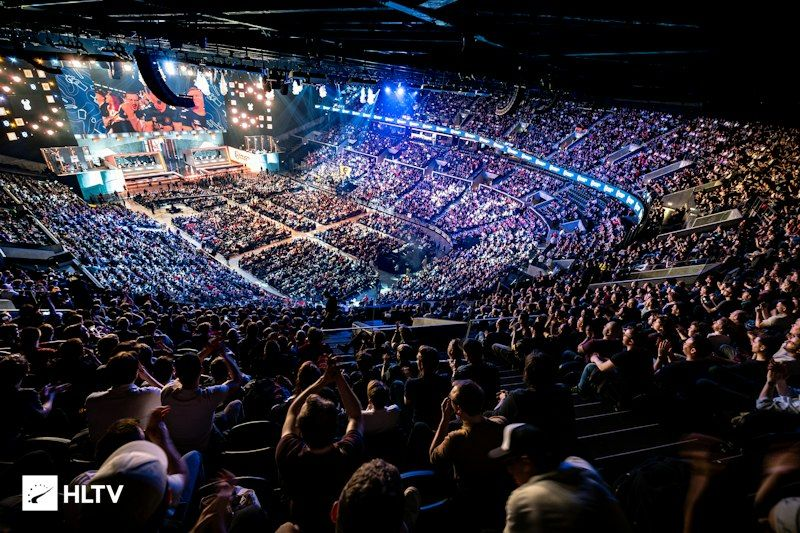

First Major in Southeast Asia: PGL Singapore Major Starts Next Week
32 teams, $1,250,000 and three Swiss stages. The last Major of 2026 kicks off on 24 November.
Read more...

The PGL Major Singapore 2026 runs from 24 November to 13 December and is the first Counter-Strike Major ever held in Southeast Asia. Thirty-two teams compete across three Swiss stages before the eight best reach the playoffs at the Singapore Indoor Stadium from 10 to 13 December, where the grand final is a best-of-five. Stage 1 opens with matches such as HEROIC vs. Imperial, Ninjas in Pyjamas vs. M80 and FaZe Clan vs. Wildcard, while the top teams, including MOUZ, Team Vitality, FURIA and Team Spirit, are invited straight to Stage 3. The champions will take home $500,000 of the $1,250,000 prize pool.